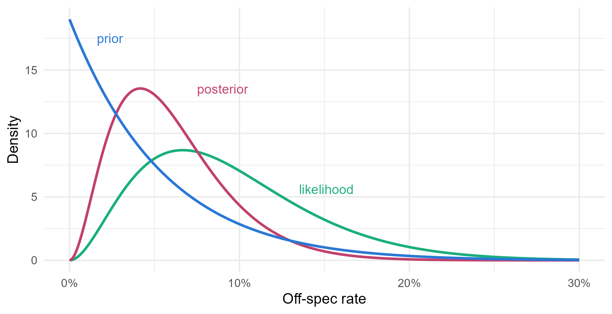

Module 5 · Lesson 2 of 13 Week 77 of 160 About 5–7 hours
The beta-binomial model
When the posterior has a formula
Describe the development team’s belief about the new recipe with a beta distribution, and update it with the trial in one line, because the beta prior is conjugate to the binomial likelihood. See why the posterior mean is a compromise between the prior and the data, compute credible intervals and posterior probabilities with qbeta() and pbeta(), and predict the off-spec batches in the next 50.
In Lesson 1, you computed the recipe’s posterior on a grid of 1,001 rates. It worked, but it was approximate, and it gets slow with more parameters. For some combinations of prior and likelihood there’s a shortcut: the posterior belongs to the same family as the prior, with updated parameters, and you can write it down with no computing at all. Such a prior is called conjugate, and for an unknown proportion, the conjugate prior is the beta distribution.
Conjugate models are rarely the last word in a real analysis. But they show exactly how a prior and data combine, they’re the building blocks of bigger models, and they give answers you can check by hand. This lesson uses them to finish the recipe trial: 2 off-spec batches out of 30, against the old recipe’s 7.9%.
A posterior with a formula? After all that MCMC in Module 4, this feels like cheating. Let’s enjoy it while it lasts!
In this lesson you’ll:
- describe beliefs about a proportion with a beta distribution
- update a beta prior with binomial data, in one line
- see why the posterior mean is a compromise between the prior and the data
- compute credible intervals and posterior probabilities
- predict future data with the beta-binomial distribution
The beta distribution
The beta distribution lives on the interval from 0 to 1, so it’s a natural way to describe what you believe about a proportion. It has two shape parameters, a and b:
p(\theta) = \frac{\theta^{a-1}(1-\theta)^{b-1}}{B(a, b)}, \qquad \text{mean} = \frac{a}{a+b},
where B(a, b) is the beta function, the constant that makes it integrate to 1. A useful way to think about it: a and b act like prior counts of successes and failures. Beta(1, 1) is flat. Beta(5, 95) is what you might believe after seeing 5 off-spec batches in 100, and Beta(50, 950) is the same belief held ten times more firmly. The total a + b is the prior’s effective sample size.
The development team’s lab work suggested an off-spec rate of about 5%, and they’d be surprised by anything over 15%. They chose a prior worth 20 batches: Beta(1, 19).
Your turn. Check that the prior matches what the team said: its mean, the probability it gives to a rate above 15%, and its 95th percentile.
Quantiles of the beta distribution come from qbeta().
a <- 1
b <- 19
c(mean = a / (a + b), p_over_15 = pbeta(0.15, a, b, lower.tail = FALSE), q95 = qbeta(0.95, a, b))A prior mean of 5%, a 4.6% chance of a rate above 15%, and a 95th percentile of 14.6%. That’s the team’s belief, in numbers. As always in R, dbeta(), pbeta(), qbeta() and rbeta() give the density, the cumulative probability, the quantiles and random draws.
Conjugate updating
Multiply the Beta(a, b) prior by the binomial likelihood for y off-spec batches out of n:
\underbrace{\theta^{a-1}(1-\theta)^{b-1}}_{\text{prior}} \times \underbrace{\theta^{y}(1-\theta)^{n-y}}_{\text{likelihood}} = \theta^{a+y-1}(1-\theta)^{b+n-y-1}.
That’s another beta distribution. The posterior is
\theta \mid y \;\sim\; \text{Beta}(a + y,\; b + n - y).
Add the off-spec batches to a, and the good ones to b. That’s all.
Your turn. The setup code has y and n. Find the posterior’s parameters, its mean and its mode, (a' - 1)/(a' + b' - 2).
The good batches are n - y.
a <- 1
b <- 19
a_post <- a + y
b_post <- b + n - y
c(a_post = a_post, b_post = b_post, mean = a_post / (a_post + b_post), mode = (a_post - 1) / (a_post + b_post - 2))The posterior is Beta(3, 47), with a mean of 6.0% and a mode of 4.2%. It’s worth 50 batches: the prior’s 20 plus the trial’s 30.
Your turn. Check the formula against Lesson 1’s grid method. On a grid with steps of 0.001, the posterior probabilities divided by 0.001 approximate the posterior density.
Compare with the density of Beta(3, 47).
grid <- seq(0, 1, by = 0.001)
post <- dbeta(grid, 1, 19) * dbinom(y, n, grid)
post <- post / sum(post)
max(abs(post / 0.001 - dbeta(grid, 3, 47))) # the largest difference from the formulaThe largest difference is 0.0000003, against a peak density of 13.5. The grid and the formula agree, as they should: they’re the same calculation, done two ways.
Here are the prior, the likelihood and the posterior together. The likelihood is scaled to have area 1, which makes it the flat-prior posterior, Beta(3, 29):
th <- seq(0, 0.3, by = 0.001)
curves <- rbind(
data.frame(theta = th, density = dbeta(th, 1, 19), what = "prior"),
data.frame(theta = th, density = dbeta(th, 3, 29), what = "likelihood"),
data.frame(theta = th, density = dbeta(th, 3, 47), what = "posterior")
)
ggplot(curves, aes(x = theta, y = density, color = what)) +
geom_line(linewidth = 1) +
annotate("text", x = c(0.016, 0.135, 0.075), y = c(17.5, 5.6, 13.5), label = c("prior", "likelihood", "posterior"),
color = c("#2a78d6", "#1baf7a", "#C2416C"), hjust = 0, size = 3.8) +
scale_color_manual(values = c(prior = "#2a78d6", likelihood = "#1baf7a", posterior = "#C2416C"), guide = "none") +
scale_x_continuous(labels = scales::percent) +
labs(x = "Off-spec rate", y = "Density") +
theme_minimal(base_size = 12)
The posterior sits between the prior and the likelihood, and it’s narrower than either: it combines two sources of information.
The posterior as a compromise
The posterior mean can be written as a weighted average of the prior mean and the trial’s own proportion:
\frac{a + y}{a + b + n} \;=\; \frac{a + b}{a + b + n}\cdot\frac{a}{a+b} \;+\; \frac{n}{a + b + n}\cdot\frac{y}{n}.
The weights are the two sample sizes: the prior’s 20 “batches” and the trial’s 30. As the trial grows, the data’s weight goes to 1, and the prior stops mattering.
Your turn. Compute the data’s weight, and the posterior mean as the weighted average.
The data’s own estimate is the proportion y / n.
a <- 1
b <- 19
w <- n / (a + b + n) # the weight of the data
c(weight = w, mean = (1 - w) * a / (a + b) + w * y / n)The data get 60% of the weight and the prior 40%, so the posterior mean is 0.4 \times 5\% + 0.6 \times 6.7\% = 6.0\%, as before. This kind of compromise is called shrinkage: the data’s estimate is pulled, or shrunk, toward the prior. It’s at the heart of hierarchical models, in Lessons 11 and 12.
Credible intervals and probabilities
A 95% credible interval is any interval with 95% posterior probability. The usual choice is the equal-tailed one, from the 2.5th to the 97.5th percentile, and with a beta posterior that’s two calls to qbeta(). Posterior probabilities of statements about \theta come from pbeta().
Your turn. Find the 95% credible interval for the new recipe’s off-spec rate.
The upper end is the 97.5th percentile, 0.975.
qbeta(c(0.025, 0.975), 3, 47)From 1.3% to 14.0%. Given the trial and the team’s prior, there’s a 95% probability that the rate is in that range. Compare the classical 95% confidence interval from 0.8% to 22%. It doesn’t use the prior, and its meaning is more roundabout: 95% of intervals made this way, in repeated trials, would contain the true rate.
Your turn. Find the posterior probability that the new recipe is better than the old one, whose rate is old_rate in the setup code.
pbeta(x, 3, 47) is the posterior probability that \theta is below x.
pbeta(old_rate, 3, 47)76%. With a flat prior, Beta(1, 1), the posterior would be Beta(3, 29), and the probability 44.9%: Lesson 1’s grid gave 45.2%, close but not exact. The team’s prior raised it to 76%, because it said lower rates were more plausible to begin with.
How strong a prior?
The team’s prior had a mean of 5%, worth 20 batches. A team member who trusts the lab results more might argue for 200 batches. Someone who trusts them less, for 2. With prior mean m and effective sample size s, the prior is Beta(ms, (1-m)s).
Your turn. For prior sample sizes of 2, 20 and 200, all with a prior mean of 5%, compute the posterior mean and the probability that the new recipe is better.
The posterior’s second parameter is b + n - y.
t(sapply(c(2, 20, 200), function(s) {
a <- 0.05 * s
b <- 0.95 * s
c(prior_size = s, mean = (a + y) / (a + b + n), p_better = pbeta(old_rate, a + y, b + n - y))
}))| Prior worth | Posterior mean | P(better) |
|---|---|---|
| 2 batches | 6.6% | 69% |
| 20 batches | 6.0% | 76% |
| 200 batches | 5.2% | 95% |
The conclusion depends on how much the team trusts its lab work. A prior worth 200 batches nearly settles the question before the trial starts, which is a lot to ask of lab results for a recipe that has never run at full scale. When the answer depends this much on the prior, say so, and collect more data. This is a sensitivity analysis, and Lesson 3 does more of them.
Challenge round
Challenge 1 · How many more batches? The plant manager wants a 95% probability that the new recipe is better before switching over. Starting from the Beta(3, 47) posterior, suppose the next k batches are all on spec. What’s the smallest k that does it?
Each good batch adds 1 to the second parameter: 47 + k.
k <- 0:200
p_better <- pbeta(old_rate, 3, 47 + k)
c(k = k[min(which(p_better > 0.95))], p_better = p_better[min(which(p_better > 0.95))])29 more batches in a row on spec would push the probability to 95.2%. A single off-spec batch along the way would push the target back, as you can check by changing the 3 to 4. Because Bayesian updating has no penalty for looking at the data as it arrives (Lesson 1), the plant can recompute after every batch and stop as soon as it’s sure.
Challenge 2 · The next 50 batches. How many of the next 50 batches will be off spec? Averaging the binomial over the beta posterior gives the beta-binomial distribution:
P(Y = k) = \binom{50}{k} \frac{B(k + a',\; 50 - k + b')}{B(a', b')}.
Compute it for k = 0, \ldots, 50, and find the probability of at most 2 off-spec batches. Compare it with the plug-in binomial probability, which uses the posterior mean as if it were the true rate.
The denominator is the beta function of the posterior’s parameters, beta(3, 47).
k <- 0:50
prob <- choose(50, k) * beta(k + 3, 50 - k + 47) / beta(3, 47)
c(total = sum(prob), at_most_2 = sum(prob[k <= 2]), plug_in = pbinom(2, 50, 0.06))The probabilities sum to 1, and there’s a 49% chance of at most 2 off-spec batches, against 42% from the plug-in binomial. Both predict 3 on average, but the beta-binomial is more spread out, because it allows for the uncertainty in the rate. Here, that puts more probability on the low counts. It also puts more on the high ones: the chance of 8 or more is 4.9%, against 0.9%. You can get the same distribution by simulation: draw a rate from rbeta(1, 3, 47), then a count from rbinom(1, 50, rate), many times.
Quick quiz
1. What makes a prior conjugate to a likelihood?
A beta prior with a binomial likelihood gives a beta posterior. You’ll meet more conjugate pairs in Lesson 4.
2. A Beta(2, 8) prior is updated with 6 successes in 10 trials. What’s the posterior?
Add the 6 successes to a and the 4 failures to b.
3. Which prior expresses the most confidence in a rate of 10%?
All three have a mean of 10%, but Beta(100, 900) is worth 1,000 observations, so it’s the narrowest.
4. As the trial gets bigger, what happens to the posterior mean?
With enough data, the prior stops mattering, unless it rules some values out completely.
5. What does a 95% credible interval of 1.3% to 14.0% mean?
The third answer describes a confidence interval. The credible interval makes the direct probability statement.
6. Why is the beta-binomial distribution more spread out than the binomial with the posterior mean plugged in?
Two sources of uncertainty give a wider prediction than one.
Wrap-up
You’ve done a complete Bayesian analysis with nothing but formulas. Here’s what you’ve learned:
- The beta distribution describes beliefs about a proportion. Its parameters act like prior counts, and a + b is the prior’s effective sample size.
- Conjugate updating: a Beta(a, b) prior and y successes in n trials give a Beta(a + y, b + n - y) posterior. The recipe’s is Beta(3, 47).
- Shrinkage: the posterior mean, 6.0%, is a weighted average of the prior mean, 5%, and the data’s 6.7%, with weights 40% and 60%.
- Credible intervals and probabilities: a 95% credible interval from 1.3% to 14.0%, and a 76% probability that the new recipe is better.
- Sensitivity: with prior sample sizes of 2, 20 and 200, that probability is 69%, 76% and 95%.
- The beta-binomial distribution predicts future counts, with the uncertainty in the rate included.
TipPractice in RStudio (optional, about an hour)
Download recipe_trial.csv into your project’s data-raw/ folder.
- A posterior after every batch. Starting from Beta(1, 19), update after each of the 30 batches in turn. Plot the posterior mean and the 95% credible interval against the batch number. When did the interval first drop below 20% at its upper end?
- The bayesrules package. Install it with
install.packages("bayesrules"), and tryplot_beta_binomial(alpha = 1, beta = 19, y = 2, n = 30)andsummarize_beta_binomial(1, 19, y = 2, n = 30). Do they agree with your numbers? - Elicit your own prior. Think of a proportion you know something about, such as the share of days your commute is late. Choose a beta prior whose mean and 90th percentile match your belief (adjust a and b by trial and error with
qbeta()). Then record a week of data and update it. - The old recipe, properly. Give the old recipe’s rate a Beta(1, 1) prior and update it with 38 in 480. Simulate 100,000 draws from each posterior, and find the probability that the new recipe is better, and the posterior distribution of the difference in rates.
NoteKey words from this lesson
- Conjugate prior
- A prior for which the posterior belongs to the same family, so the update is a formula.
- Beta distribution
- A distribution on the interval from 0 to 1 with two shape parameters, used for beliefs about proportions.
- Effective sample size of a prior
- How many observations the prior is worth. For Beta(a, b), it’s a + b.
- Shrinkage
- The pull of an estimate toward the prior mean, or toward a group average. The posterior mean is a weighted average of the prior mean and the data’s estimate.
- Credible interval
- An interval with a stated posterior probability of containing the parameter. The equal-tailed interval runs from the 2.5th to the 97.5th percentile.
- Sensitivity analysis
- Repeating an analysis with different reasonable priors, to see how much the conclusions depend on them.
- Beta-binomial distribution
- The distribution of a future binomial count, averaged over a beta distribution for the probability.
NoteWant to read more?
- Alicia Johnson, Miles Ott and Mine Dogucu, Bayes Rules!, chapters 3, “The Beta-Binomial Bayesian model” and 4, “Balance and sequentiality in Bayesian analyses”, with R code using the bayesrules package.
- Andrew Gelman and others, Bayesian Data Analysis (3rd edition), sections 2.1 to 2.4: the binomial model, the posterior as a compromise, and summaries of the posterior.
- Allen Downey, Think Bayes (2nd edition), free online. Python rather than R, but its grid-based approach is a good match for Lessons 1 and 2.